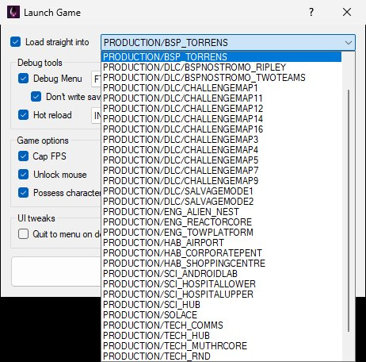
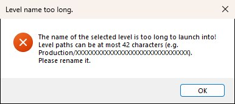
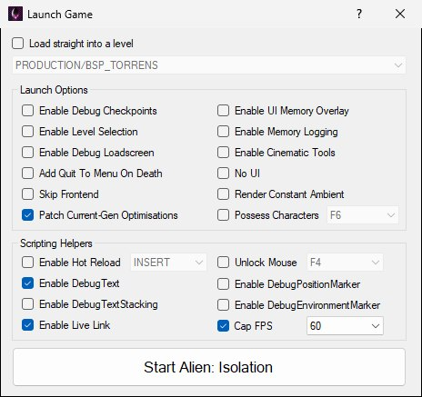
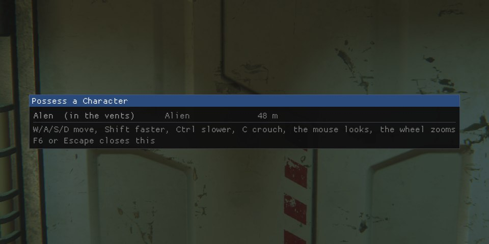
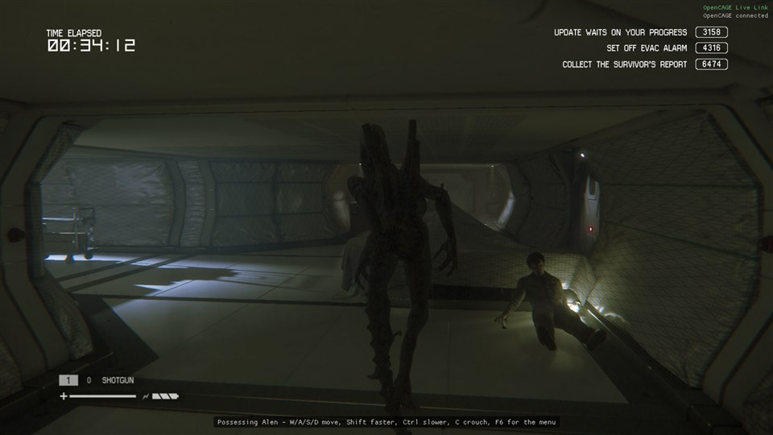
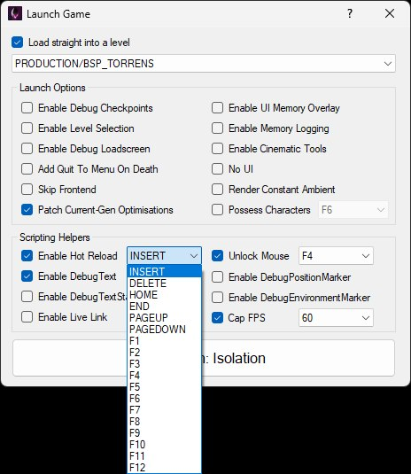
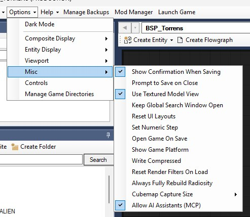

The Launch Game button on the main toolbar (after Manage Backups and Mod Manager, shown below) opens the Launch Game window. From here you choose whether to boot straight into a level and which options the game starts with, then hit Start Alien: Isolation. The button is only enabled for Steam, Epic Games Store and GOG installs, because launching works by patching the game executable. Opening the window closes the game if it's running from this install, without asking, so its files can be written.
The window, shown below, has the level to start in along the top: Load straight into, with the level list beside it. Under that are three groups of options, each in two columns:
Start Alien: Isolation is the button along the bottom. Hover over any option for a line on what it does. The Debug tools, Cap FPS, Unlock mouse and Possess characters run in OpenCAGE's runtime utils, which work with the Steam, GOG and Epic Games Store versions only, so on other installs they're greyed out. A dropdown beside an option is greyed out until its box is ticked. On the Steam install pictured, everything is available.
The first time you open the window, Debug Menu, Debug entities, Live Link, Current-gen script fixes, Cap FPS and Unlock mouse are ticked, and the rest aren't. After that, each option stays as you last left it. Load straight into is ticked whenever you have a level open, with that level picked.
![The Launch Game window: Load straight into ticked at the top, with PRODUCTION/BSP_TORRENS chosen in the level list beside it. The Debug tools group: Debug Menu ticked with its key set to F7, Don't write saves ticked and set in beneath it, and Hot reload ticked with its key set to INSERT in the left-hand column; Debug entities and Live Link ticked in the right-hand column. The Game options group: Cap FPS ticked at 60, Unlock mouse ticked with its key set to F4, and Possess characters ticked with its key set to F6 in the left-hand column; Constant ambient lighting and No HUD unticked and Current-gen script fixes ticked in the right-hand column. The UI tweaks group: Quit to menu on death and Debug loading screen, both unticked. The Start Alien: Isolation button along the bottom.](img/launch-game.jpg)
The Launch Game window on a Steam install with a level chosen. Debug Menu (with Don't write saves), Hot reload, Cap FPS, Unlock mouse and Possess characters are ticked, so their dropdowns are live.
The game loads levels from disk, so if the level you have open has unsaved changes when you press Start Alien: Isolation, OpenCAGE asks whether to save it first. Yes saves the level (as File → Save Level does) and starts the game, No starts it without saving, and Cancel does neither. If the save doesn't go through, the game isn't started either. If you've added models or other content that needs building, cancel and use File → Save and Build Level first (see Save and Build).

While the game is running with Live Link ticked, a Live Link button joins Launch Game on the toolbar, to its right. A game started without it gets no button.
Older versions of the window had more options, and a Scripting Helpers group. See Removed Options for where they went.
Tick Load straight into, at the top of the window, and pick a level from the list beside it (the list is greyed out until the box is ticked) to have the game boot straight into that level, past the title screen. That's useful for testing a level without playing through from the start. Leave it unticked and the game starts as normal, at its title screen and then its main menu (FRONTEND).
Skipping the title screen goes with the level. Older versions had a separate Skip Frontend option for it, which has gone: booting into a level always skips the title screen, and starting at the main menu never does.

The level list on a retail install: the campaign maps plus the DLC ones under PRODUCTION/DLC. FRONTEND is never offered.
The list holds every level in the current game install, including any you've made with Create Level. OpenCAGE preselects the level you're editing (PRODUCTION/BSP_TORRENS above), with the box ticked, otherwise your last used choice, and the selection is remembered for next time.
Booting into a level works by writing the level's name into the game executable, and that space is fixed: a level path longer than 42 characters (for a shipped level that's Production/ plus the folder name) can't be launched into, and OpenCAGE will refuse with the message shown below rather than corrupting the patch.

The Debug tools group, under the level, holds the tools for looking into the game while it runs. All five run in OpenCAGE's runtime utils, so they're for the Steam, GOG and Epic Games Store versions only, and they're set up when you start the game rather than when you tick them:
With Don't write saves ticked, beneath the Debug Menu box, the game writes nothing to your saved games while it runs, so testing a level never changes them. It's part of the Debug Menu, so it only works with Debug Menu ticked too, and is greyed out until it is. It's on from the moment the game starts, before the game first saves. In the game, the Debug Menu's Saves tab, in its Game group, has the same switch, to turn it off or back on as you play, and counts each save it has kept back.
What's kept back:
The game carries on as if each save had worked, and loading still works, from what was saved before.
What it doesn't do:
BlockAchievements=1 to the settings file to have it on from the start.Tick Debug entities and four debug script entities show in the game: DebugText and DebugTextStacking draw their text on screen, DebugEnvironmentMarker draws its text at a place in the world, and DebugPositionMarker draws axes there. They're in the shipped scripts but draw nothing in the retail game; this brings them back, so a script that places a DebugText shows its message on screen. See Debug Text & Markers for what each one draws, and how to show a script's values with them.
It's one box for all four. Older versions had a box for each (Enable DebugText, Enable DebugTextStacking, Enable DebugEnvironmentMarker and Enable DebugPositionMarker); if any of them was ticked, Debug entities is ticked for you the first time this version starts. Four more debug entities, such as DebugGraph, have switches in the Debug Menu's Scripts > Entities tab.
Tick Hot reload and press the chosen key in the game to reload the current level, handy for iterating on scripts without a full restart. The level is loaded again from disk, so anything Live Link sent that you haven't saved is dropped until you Resync. The key defaults to INSERT; the dropdown beside the box offers DELETE, HOME, END, PAGEUP, PAGEDOWN, F1 to F9, F11 and F12 as alternatives (see Keys).
Tick Live Link and the game serves OpenCAGE's Live Link (to this PC only), and OpenCAGE connects to it by itself a few seconds after the game starts: script edits (entities added or deleted, links, parameters) reach the running level without a reload, entity methods can be triggered from the Entity Inspector or a method pin's right-click menu, and the Viewport's camera and the game's can follow each other. Starting the game with it ticked also brings up the Live Link button on the toolbar, beside Launch Game, switched on. It's for script tweaks only: models, textures, materials and new composites still need the level saved and loaded again (see what Live Link sends).

Live Link, in the right-hand column of the Debug tools group, under Debug entities.
The Game options group changes how the game runs. The three on the right are patches to the game executable, so they work on any install Launch Game can start:
These three are written into the game executable the moment you tick or untick them, and again each time you open Launch Game or start the game, so a game file check or update doesn't lose them. OpenCAGE warns if it can't write, which usually means the game is still running.
The three on the left, Cap FPS, Unlock mouse and Possess characters, run in OpenCAGE's runtime utils, like the Debug tools: they're for the Steam, GOG and Epic Games Store versions, and they're set up when you start the game.
Tick Cap FPS and the game runs at most the chosen number of frames a second, picked from the dropdown beside the box: 30, 60 (the default), 90 or 120. The game's clock moves on at least 1/360 of a second every frame, so when a level draws faster than 360 frames a second (a near-empty new level with V-Sync off, say) everything in the game runs too fast. Capping the frame rate keeps it at its proper speed. V-Sync, when it's on, caps the frame rate too.
Tick Unlock mouse and the game leaves your mouse cursor alone when it starts instead of taking it over, so you can keep working in OpenCAGE while it runs. This is handy with Live Link's camera sync, where you fly the Viewport and the game follows. To look around in the game, click its window and press the chosen key: the game takes the mouse as it normally does. Press the key again to get your cursor back. While the cursor is free, moving it over the game doesn't turn the camera and clicks don't reach the game, but the keyboard still works and so do menus. A note at the top of the game's screen says which way the key just switched it. It's most useful with the game in a window or on another screen. The key defaults to F4, with the same choices as the hot reload key (see Keys).
With Possess characters ticked, you can take control of a character in the running game — the alien, an android or a human — and walk it around the level yourself. Pick the key that opens its menu from the dropdown beside the box: F6 by default (see Keys). Like the Debug tools, it runs in OpenCAGE's runtime utils in the game folder.
In the game, press the key to open the Possess a Character menu. It lists the characters the game is running, with what each one is and how far away it is. The one you're facing comes first (marked ahead), then the rest from nearest to furthest. Click one, or pick it with the arrow keys and Enter, to take control of it. While the menu is open the mouse cursor is shown and the game doesn't see your keyboard or mouse. Press the key again or Escape to close it.

The menu in a Survivor map, with the alien still moving through the vents: it's listed, but greyed out until it comes out.
Once you have a character, the camera sits behind it. W, A, S and D move it relative to the camera, Shift makes it go faster and Ctrl slower, and the mouse turns the camera around it. Roll the mouse wheel to bring the camera closer or take it further away: it goes from 1.5 m to 10 m behind the character (4 m to begin with), and stays where you leave it for the next character you take. It moves with its own animations and speeds, along the routes the level's navigation mesh allows it, so the alien moves as the alien does and can't walk through walls. Let go of the keys and it comes to a stop. C gives it the game's own order to crouch, or to stand up again, but the character only looks any different if its animations include crouching: the humans tried so far (the Torrens crew, and the spacesuited crew on LV-426) stay upright, and the alien doesn't take the order. Your own character stands still meanwhile: the game doesn't see your keyboard (apart from Escape, for the pause menu) or mouse. To let go, open the menu and choose Let go, or take another character; the character's own behaviour then takes over again.

The alien possessed: the camera follows behind it, and a note at the bottom of the screen gives the keys.
The UI tweaks group's two boxes swap in OpenCAGE's own versions of two of the game's menus:
Each one goes into UI.PAK as a file of OpenCAGE's own, beside the game's menu, and the game is pointed at it, so the game's own menu files are left as they are. The UI Editor doesn't list OpenCAGE's copies, and the Mod Manager doesn't count them as changes you've made, so they never end up in a mod you create. The change is made the moment you tick or untick a box, and made again each time OpenCAGE starts the game (a game file check puts the game's files back as they shipped), so it's in place whether you launch from this window or not. If a change can't be made in full, OpenCAGE says so and tries again the next time it starts the game. When OpenCAGE starts, any menus an older version of OpenCAGE copied over the game's are put back as the game shipped them (in the Mod Manager's copies of UI.PAK too), and the options you had ticked are set up this way instead.
Older versions had two more boxes here, Enable Debug Checkpoints and Enable Level Selection, which the Debug Menu has taken over (see Removed Options). The next time OpenCAGE starts the game, their menus are taken back out of UI.PAK.
The Debug tools, and Cap FPS, Unlock mouse and Possess characters, are done inside the game by OpenCAGE's runtime utils: a small plugin OpenCAGE copies into the game folder when you start the game with any of them ticked, and takes out again when none are. Older versions of OpenCAGE had most of them in a Scripting Helpers group of their own.
The runtime utils support the Steam, GOG and Epic Games Store versions of the game, so on other platforms those options are greyed out. They're set up as the window says each time OpenCAGE starts the game, from this window or with Open Game On Save, with their settings in OpenCAGE.RuntimeUtils.ini beside AI.exe (see Settings File), so ticking or unticking one while the game runs only takes effect the next time you start it from OpenCAGE. They stay in the game folder between launches, so a game started from Steam, GOG Galaxy or the Epic Games Launcher runs with whatever OpenCAGE last started it with.
The runtime utils are loaded through a d3d11.dll in the game folder. If another mod already has its own d3d11.dll there (ReShade, Special K or DXVK, say), OpenCAGE moves it aside to d3d11.dll.opencage_backup, says so, and puts it back the next time it starts the game with every runtime utils option unticked; that mod doesn't run while the runtime utils are in. If a backup is already there and another mod's d3d11.dll is in place too, nothing is overwritten: the game starts without the runtime utils, and OpenCAGE says why.
Four options have a key, picked from the dropdown beside the box. Each dropdown offers INSERT, DELETE, HOME, END, PAGEUP, PAGEDOWN, F1 to F9, F11 and F12 (not F10: Windows keeps it for menus, so the game never sees it), and is greyed out until its box is ticked:

The Hot reload key dropdown, open: INSERT is the default, with DELETE, HOME, END, PAGEUP, PAGEDOWN and the function keys as alternatives.
No two ticked options can have the same key, as the game would do both when it's pressed. Picking a key that another ticked option already has brings up a message naming it, and the dropdown goes back to the key it had. If two still end up sharing a key (by ticking an option whose key another already uses), Start Alien: Isolation says which two clash and doesn't start the game until one of them has another key.
The Debug Menu's free camera has keys of its own: F8 turns it on and off and F9 takes a screenshot, and while it flies it uses F1, F2, F3, HOME, DELETE, END, PAGEUP and PAGEDOWN. With Debug Menu ticked, picking one of those in any of the four dropdowns brings up a warning. You can keep it, but the key then goes to that option and the free camera does without it. F8 and F9 can be changed in the settings file, with CinematicCameraKey and CinematicScreenshotKey.
Each time OpenCAGE starts the game (from this window, or with Open Game On Save) with any of the Debug tools, Cap FPS, Unlock mouse or Possess characters ticked, it puts the runtime utils in the game folder and writes their settings to OpenCAGE.RuntimeUtils.ini, beside AI.exe. With none of them ticked, the plugin is taken out again. The plugin and its settings stay in the game folder between launches, so a game started from Steam, GOG Galaxy or the Epic Games Launcher runs with whatever OpenCAGE last started it with.
These keys, in the file's [RuntimeUtils] section, are written afresh from the window for every launch, so a change made to them by hand only lasts until OpenCAGE next starts the game:
DebugMenu and DebugMenuKey: Debug Menu and its keyDontWriteSaves: Don't write saves, which is only written as on when Debug Menu is ticked tooDebugText, DebugTextStacking, DebugEnvironmentMarker and DebugPositionMarker: all four from the one Debug entities box, so they're on together or off togetherHotReload and HotReloadKey: Hot reload and its keyLiveLink: Live LinkCapFps: the Cap FPS rate, or 0 when it's untickedUnlockMouse and UnlockMouseKey: Unlock mouse and its keyPossess and PossessKey: Possess characters and its keyTwo keys older versions wrote are removed: CinematicTools, and LiveLinkPort (OpenCAGE only connects to Live Link on its own port). Any other key you add to the [RuntimeUtils] section by hand is kept from launch to launch. The ones you're most likely to want:
BlockAchievements=1: the Debug Menu's Block awards and stat writes, in its Saves tab, on from the start, so the game awards no achievements and adds nothing to their progress. It needs Debug Menu ticked.UiMemoryOverlay=1: the game's UI memory overlay, a checkbox in the Debug Menu's Performance > Memory tab, on from the start. It needs Debug Menu ticked.CinematicCameraKey and CinematicScreenshotKey: the free camera's on and off key (F8 unless set) and its screenshot key (F9), named as in the dropdowns, for example CinematicCameraKey=F11.LoadAllZones=1: streams in every zone of the level, not only those around the player. On a big level (HAB_AIRPORT, for one) that can be more than the game has memory for, and zones then stop finishing loading.LiveLinkCamera=0: Live Link can neither move the game's camera nor read it, so its camera sync does nothing, and cubemap captures are turned away.RadiosityWarning=1, ExtraShadowLights=1 and D3DDebugLayer=1: settings for the Debug Menu's Rendering group, read as the game starts, which need Debug Menu ticked like the rest of it. The first shows a warning over the game while a level runs without its radiosity data (the Radiosity tab can switch it on and off too). The second lets the game draw shadows for 16 lights a frame rather than 4 (the game's capture mode), for up to four times the shadow work. The third has the game's graphics checked for errors, such as the ones broken imported models and shaders cause, listed in the Debug Menu's Developer tab; it makes the game much slower, and needs Windows' optional Graphics Tools feature installed.DebugGraph=1, DebugObjectMarker=1, DebugMenuToggle=1 and DebugCaptureScreenShot=1: the Debug Menu's switches for these debug entities (in its Entities tab, Scripts group), on from the start.The plugin writes OpenCAGE.RuntimeUtils.log beside the settings file each time the game runs, which is the place to look when a setting didn't take effect.
Older versions of Launch Game had more options. They've gone from the window, but what they did is still to hand:
UiMemoryOverlay=1 in the settings file has it on from the start.Your settings carry over: if any of the four debug entity boxes was ticked, Debug entities is ticked for you the first time this version starts, and the settings of the other removed options are forgotten. What they left in the game is switched back off for you: the UI memory overlay and memory logging patches are taken out of the game executable when you open Launch Game, start the game or save a level, and the pause and main menus that debug checkpoints and level selection put in UI.PAK are taken out the next time OpenCAGE starts the game.
Enable Cinematic Tools has gone from Launch Game. The free camera, camera tracks and visual settings of HattiWatti's Cinematic Tools are now part of the Debug Menu, in its Cinematic group, along with tabs to hide the HUD, hold the other characters still and take screenshots. Hover over Debug Menu in Launch Game and its tooltip says so. To use them, tick Debug Menu, start the game, press the Debug Menu's key and open Cinematic. The free camera has keys of its own too: F8 turns it on and off, with the Debug Menu open or closed, and F9 takes a screenshot (see Keys).
Cinematic Tools folder it made in the game folder, aren't read by the Debug Menu, which saves its own. That folder is left as it is.Outside the Launch Game window, under the toolbar's Options dropdown (shown below):
